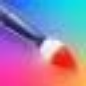
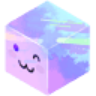
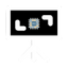

МолекулаАгрегаторы нейросетей
Молекула объединяет модели для текстов, изображений, видео и музыки. В одном аккаунте можно подобрать инструмент под этап работы, сохранить инструкции проекта и использовать готовые роли.
К задаче в МолекулеРаздел «Арт»: варианты ИИ для этой задачи, описания возможностей и переходы к обзорам. Сравните несколько решений на одинаковом примере.
Опишите сюжет, композицию и настроение будущей иллюстрации, чтобы подготовить визуальный вариант. Генератор картинок Молекулы работает с описанием или референсом; проверьте детали и соответствие замыслу, прежде чем использовать изображение в личном или рабочем проекте.
Создай иллюстрацию тихого двора после дождя: скамья под деревом, отражения в лужах, мягкий вечерний свет. Композиция горизонтальная, без людей и надписей. Нужна спокойная графическая подача для обложки рассказа.
Молекула объединяет модели для текстов, изображений, видео и музыки. В одном аккаунте можно подобрать инструмент под этап работы, сохранить инструкции проекта и использовать готовые роли.
К задаче в МолекулеДля «A1.art» сначала определите свою задачу и требуемый результат. Карточка относится к направлению «Генерация изображений».

«AI Picasso» готовит визуальные материалы по заданию.
«AICartoonGenerator» представлен в разделе «Арт». При выборе проверьте нужную операцию и условия работы с результатом.

«AnimeGenius» готовит визуальные материалы в аниме-оформлении.
«Arteus AI» готовит визуальные материалы по заданию.
Для «Boords» сначала определите свою задачу и требуемый результат. Карточка относится к направлению «Видео».
Сравнивать «Charisma» с другими инструментами раздела «Видео» удобнее на одинаковом исходном материале.
Fantoons позволяет создавать собственные комиксные приключения и работать с ними на общей платформе. Среди примеров представлены персонажи мира Гарри Поттера и история Сары из киберпанк-окружения Рэйвенкло. Сервис объединяет придуманный сюжет, визуальное повествование и взаимодействие с другими участниками при создании приключений.
«Fotor image generator» представлен в разделе «Генерация изображений». При выборе проверьте нужную операцию и условия работы с результатом.
LaPrompt объединяет галерею и площадку с промтами для генерации изображений и видео. Пользователь может искать пример задания для выбранного визуального направления. Перед повторным использованием выясните поддерживаемую модель и необходимые настройки, а затем замените детали сцены; чужой результат не доказывает, что тот же запрос воспроизводится в вашей конфигурации.
Для «Metos» сначала определите свою задачу и требуемый результат. Карточка относится к направлению «Арт».

«Neural Canvas» готовит визуальные материалы по заданию. Дополнительно «Neural Canvas» помогает составлять визуальные панели комикса.
Paint Potion создаёт векторные иллюстрации по описанию пользователя с участием ИИ. Изображения можно уточнять, а при сохранении доступны настройки экспорта. Продукт ориентирован на веб-агентства и творческих авторов, которым нужен согласованный визуальный материал для дальнейшей работы над оформлением проекта.
«Plazmapunk» подготавливает трёхмерные объекты.
Сравнивать «PUMPG - Midjourney prompt generator» с другими инструментами раздела «Генерация изображений» удобнее на одинаковом исходном материале.
«Selfarama Books» готовит визуальные материалы по заданию.
Spawn создаёт и настраивает фэнтезийных персонажей средствами ИИ. Можно получать членов группы для разных рас с характеристиками и инвентарём. Инструмент предназначен для подготовки игрового образа, который объединяет внешнюю или сюжетную принадлежность героя с описанными параметрами и набором вещей персонажа.
«Synthetik» представлен в разделе «Арт». При выборе проверьте нужную операцию и условия работы с результатом.
«Unit.fan» представлен в разделе «Создание контента». При выборе проверьте нужную операцию и условия работы с результатом.
«ArtblastAI» представлен в разделе «Генерация изображений». При выборе проверьте нужную операцию и условия работы с результатом.
«Artchan» готовит визуальные материалы по заданию.
AutoDraw от Google помогает подбирать рисунки средствами машинного обучения. Инструмент относится к рисованию и предлагает визуальные варианты в ходе творческой работы. Пользователь получает помощь в оформлении изображения, когда собственный набросок или замысел нужно связать с предложенным системой рисунком.
«Exactly AI» готовит визуальные материалы по заданию.
«Fontis» представлен в разделе «Генерация изображений». При выборе проверьте нужную операцию и условия работы с результатом.
«Freeflo» готовит визуальные материалы по заданию.
Сравнивать «Prompt Journey» с другими инструментами раздела «Генерация изображений» удобнее на одинаковом исходном материале.
«Simply Draw» представлен в разделе «Образование». При выборе проверьте нужную операцию и условия работы с результатом.
«smexy AI» представлен в разделе «Генерация изображений». При выборе проверьте нужную операцию и условия работы с результатом.
ThinkDiffusion предоставляет браузерный доступ к среде работы с ИИ-моделями. В наборе возможностей представлен ControlNet, а для дополнительных задач можно запускать виртуальные машины. Такое окружение позволяет работать с моделями через браузер и использовать несколько запущенных сред параллельно в рамках своих задач.
Сравнивать «This Person Not Exist» с другими инструментами раздела «Генерация изображений» удобнее на одинаковом исходном материале.
Для «Vanity AI» сначала определите свою задачу и требуемый результат. Карточка относится к направлению «Видео».
Vieutopia предлагает создание визуальных работ в разных художественных направлениях, среди которых абстракция, фэнтези, поп-арт и импрессионизм. Для задания определите главный объект и назначение иллюстрации. Сравните несколько вариантов по композиции и узнаваемости деталей, а не только по стилистическому эффекту; выбор оформления должен поддерживать смысл материала.
Для «Xno AI» сначала определите свою задачу и требуемый результат. Карточка относится к направлению «Генерация изображений».
«ArtBot» готовит визуальные материалы по заданию.
«Blackink AI» представлен в разделе «Генерация изображений». При выборе проверьте нужную операцию и условия работы с результатом.
«Colorin AI» подготавливает контурные изображения для раскрашивания.
Drawww представляет собой приложение для рисования на iPad с ИИ-генерацией изображений. В нём предусмотрены работа со слоями, настраиваемые художественные инструменты и форматы для обмена материалами. Пользователь может сочетать собственную работу над рисунком с генеративным направлением, организуя изображение и его дальнейшую передачу внутри приложения.
Foxify.Art предоставляет онлайн-редактор изображений с участием ИИ для разных визуальных задач. Среди направлений есть художественные материалы и публикации соцсетей, а также презентации и плакаты. Подготовка логотипов дополняет набор сценариев, связывая создание изображения с выбранным автором способом использования графики.
«LegenDraw» создаёт портретные и аватарные изображения.
Сравнивать «NightCafe Creator» с другими инструментами раздела «Генерация изображений» удобнее на одинаковом исходном материале.
Для «NQRT» сначала определите свою задачу и требуемый результат. Карточка относится к направлению «Генерация изображений».
«Oksuro» готовит визуальные материалы по заданию.
«Pixelmind» представлен в разделе «Генерация изображений». При выборе проверьте нужную операцию и условия работы с результатом.
«Recolorai» создаёт портретные и аватарные изображения.
Stable Diffusion Online на веб-сайте stablediffusionweb.com создаёт изображения по описанию. В интерфейсе доступны визуальный референс и настройки оформления генерируемой картинки.
Для «StyleMyRide AI» сначала определите свою задачу и требуемый результат. Карточка относится к направлению «Арт».
«Turbo.Art» готовит визуальные материалы по заданию.
Страница 1 из 4